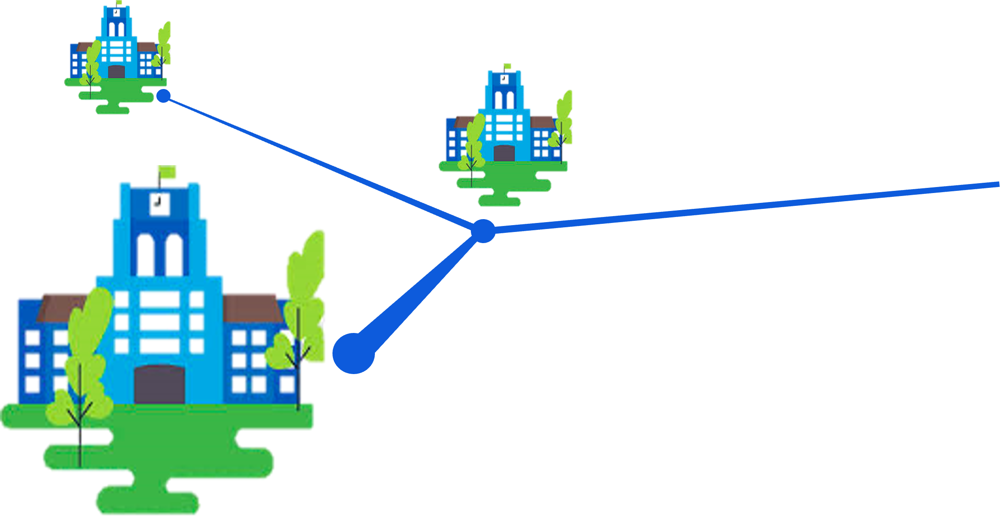

Vous assurez l'approvionnement en fruits et légumes sur votre campus ?
-Recevez dès maintenant 25% de subvention sur chacun des paniers que vous vendez aux étudiants.
-Obtenez une aide technique et logistique pour faciliter l'approvisionnement.
Vous voulez créer une antenne de distribution de fruits et légumes sur votre campus?
Vous voulez mettre vos talents au service de ce projet ?
Envie de cuisiner dans le food truck ?
Pour tout autre question, envoyer nous un mail à l'adresse email suivante : contact@timbastien.fr